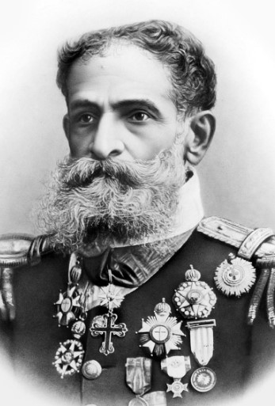
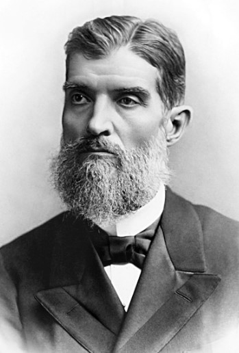

VOTO PARA
Presidente
Número
Nome:
Partido:
Vice-presidente:
Canditados válidos para esta simulação
*Em ordem alfabetica

Nome: Deodoro da Fonseca
Partido: PPP
Número: 22

Nome: Prudente de Morais
Partido: PRF
Número: 13